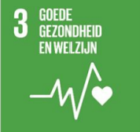
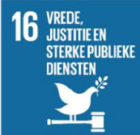
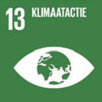
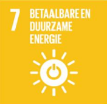
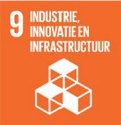

Over Code Collectief
Wij zijn een team van vijf gepassioneerde programmeurs, verenigd door onze liefde voor technologie en innovatie. Samen werken we aan een ambitieus project: een unieke en meeslepende ervaring op Steam. Ons doel is om een platform te creëren dat gamers van alle niveaus samenbrengt en inspireert.
Veel gamers vinden het moeilijk om een gezonde balans te houden tussen hun speelgedrag en andere verantwoordelijkheden. Ze verliezen vaak het overzicht over hun speeltijd, wat kan leiden tot vermoeidheid, stress of verlies van tijd voor andere belangrijke activiteiten.
Daarom maken wij een applicatie die gamers helpt bij het bijhouden van hun speeltijd, inzicht biedt in hun speel gewoontes en zo dus hen helpt met gezonde speeltijden aan te houden. De tool biedt ook herinneringen en overzichten van de speeltijd per game, wat helpt om een bewuster speelgedrag te ontwikkelen.
We hebben diverse Sustainable Development Goals gesteld om Code Collectief zo succesvol mogelijk te maken voor de gehele samenleving
Join ons daarom op onze journey en neem deel aan Code Collectief!
Check daarnaast ook onze SDG's
Othman Boulouad (AI)

Ik heb voor de SDG 4: Goede gezondheid en welzijn, gekozen aangezien het subonderdeel ‘AI’ hierbij een cruciale rol zou kunnen spelen mits goed uitgewerkt.
Voordelen van AI in de zorg:
1. Beschikbaarheid
Mocht AI gereed zijn voor hun cruciale rol in de zorg dan zijn deze diensten ook altijd beschikbaar. Net als ons zijn robots niet uit te putten of hebben ook geen (eigen) levens te onderhouden. Deze diensten zijn dan dus ook doelgericht en beschikbaar voor iedereen.
2. Kosten
Laatste tijd vliegt in dit dure leventje alles omhoog, zo dus ook de zorgkosten. Mocht AI al ontwikkeld zijn en klaar voor gebruik is dit voor ziekenhuizen een goedkopere optie om zo gezondheidszorg voor iedereen beschikbaar te maken.
3. Onuitputbaar
Niet als wij mensen zijn robots onuitputbaar. Voorzie AI machines met voldoende stroom en dergelijke en dan zijn ze gereed om 24 uur te werken. Wij mensen daarentegen raken uitgeput. In de zorg is dit belangrijk aangezien artsen wel meer dan 10 uur in een operatie kunnen zitten.
Nadelen van AI in de zorg:
1. Onbetrouwbaarheid
Artsen met tientallen jaren ervaring zijn de meest betrouwbare mensen in hun vak. Hun ervaring zorgt ervoor dat ze elk probleem weleens voorbij hebben zien komen en precies weten hoe ze een patiënt moeten helpen. Of verzorgers die precies weten hoe ze met een patiënt moeten omgaan. Robots daarentegen doen hetgeen wat hun geleerd wordt, en geven ze niet altijd de optimale situatie aangezien elke patiënt anders is. Dit zou kunnen worden geminimaliseerd door strenge orde te houden op de robots.
2. Vervanging van de mens
Mocht AI toegepast worden in de zorg. Betekent dit wel dat het ten kosten gaat van de banen van mensen. Dit is voor bedrijven zeer aantrekkelijk.
Hassan Hassan (CSC)

Ik heb gekozen voor de SDG 16: (Vrede, Justitie en Sterke Publieke Diensten), omdat ik van mening ben dat dit SDG het meest aansluit bij mijn rol in dit Steam project als CSC.
Voordelen van ICT voor SDG 16
1. Betere beveiliging en bescherming van gegevens
Moderne cybersecuritytechnologieën, zoals Multi-factor authenticatie en versleuteling, helpen overheden bij het beschermen van persoonlijke en juridische gegevens. Een Multi-factor authenticatie voegt een extra beveiliging laag toe door gebruikers meerdere vormen van identificatie te vragen, wat de kans op ongeautoriseerde toegang verkleint. Versleuteling zorgt ervoor dat gegevens onleesbaar zijn voor derden, zelfs als ze worden gestolen. Dit voorkomt ongeautoriseerde toegang en vergroot het vertrouwen van men in publieke instellingen. Het NIST Cybersecurity Framework is bijvoorbeeld een goed hulpmiddel voor overheden om gestructureerd risico's te identificeren, te beschermen, te detecteren, te reageren en te herstellen. Door deze vijf stappen kunnen instanties zich beter wapenen tegen cyberaanvallen en bijdragen aan een veilige samenleving.
2. Toegankelijkheid van publieke diensten via de Cloud
Door Cloud technologie kunnen publieke diensten, zoals juridische ondersteuning en administratie processen, online worden aangeboden. Dit biedt voordelen voor mensen in afgelegen gebieden en maakt overheidsdiensten toegankelijker en efficiënter. Digitale oplossingen verminderen niet alleen de toegangsdrempels voor basisdiensten, maar helpen ook ongelijkheid te bestrijden door iedereen gelijke toegang te geven tot overheidsinformatie en ondersteuning.
Nadelen en hoe je deze zou kunnen minimaliseren
1. Privacy risico’s door dataverzameling
Het verwerken van grote hoeveelheden persoonlijke gegevens brengt risico’s met zich mee, waaronder ongewenste inbreuk op de privacy. Dit kan leiden tot wantrouwen en verlies van vertrouwen in de overheid. Om deze risico’s te minimaliseren, kunnen overheden het principe van 'privacy by design' toepassen. Dit betekent dat systemen vanaf het begin worden ontworpen met privacy als uitgangspunt. Daarnaast kunnen overheden gebruikmaken van data-minimalisatie, waarbij alleen de strikt noodzakelijke gegevens worden verzameld en bewaard.
2. Risico op cyberaanvallen
De toenemende digitalisering en complexiteit van Cloud-systemen maken overheidsdiensten aantrekkelijk voor cybercriminelen. Een aanval kan leiden tot verlies van gegevens en verstoring van diensten. Het opzetten van Cybersecurity Incident Response Teams (CSIRTs) en het toepassen van frameworks zoals het NIST Cybersecurity Framework helpt om de impact van cyberaanvallen te beperken. Binnen NIST worden manieren van detectie en herstel gehanteerd om snel op aanvallen te reageren en systemen zo snel mogelijk weer operationeel te maken. Regelmatige beveiligingstesten, zoals penetratietests, kunnen daarnaast helpen om systemen actueel en veilig te houden.
Conclusie
De inzet van ICT via cybersecurity en Cloud oplossingen, brengt veel voordelen met zich mee voor het realiseren van SDG 16. Door verbeterde beveiliging en toegankelijkheid kunnen overheden hun diensten verbeteren en het vertrouwen van burgers versterken. Ondanks uitdagingen zoals privacy risico’s en cyberdreigingen, kunnen deze risico’s worden verminderd door het toepassen van privacy by design, data-minimalisatie, en het implementeren van het NIST Cybersecurity Framework. Zo draagt ICT CSC bij aan een veiligere, eerlijkere en toegankelijkere publieke diensten, wat goed aansluit bij de doelen van SDG 16.
Rahim Khallaoui (SD)

Ik heb gekozen voor SDG 13: (klimaatacties), omdat ik van mening ben at dit het meest toereikend is bij het onderdeel SD en het beste aansluit bij mijn gedeelte van project Steam.
Voordelen van SD in relatie tot SDG 13:
1. Efficiënter energieverbruik van de software en online duurzaamheid
Door de constante groei van de software die ontwikkeld wordt door onder andere de hulp van AI kan software gebruikt worden om energienetwerken te optimaliseren, dit door bijvoorbeeld energiebehoefte te voorspellen met behulp van eerder benoemde AI. Dit heeft tot gevolg dat er minder energieverspilling is en efficiënter gebruikt gemaakt kan worden van hernieuwbare energiebronnen. Dit helpt ons verder in het verkleinen van onze ecologische voetafdruk en de algemene klimaatacties die er getroffen moeten worden om het klimaat stukje bij beetje te verbeteren. Overigens is het gebruik van o.a. digitale workflow en documentbeheer een duurzamere optie met betrekking tot het feit van het papier proces wat er gebruikt wordt om alles op papier te zetten, wat onze bossen beschermt en CO2-uitstoot verminderd.
2. Analyse van Data en simulatie
In SD kunnen mensen tools ontwikkelen die klimaatdata kunnen analyseren om trends te kunnen begrijpen. Hierbij kunnen ze veel voorkomende problemen beter begrijpen en voorkomen, denk hierbij aan smeltend ijs en ontbossing. Dit kan beleidsmakers verder helpen om betere en gerichte klimaatacties te ondernemen. Dit kan bedrijven dus ook helpen bij het voorspellen van de milieu impact van hun processen en producten. Met deze informatie kunnen ze dit minimaliseren of zelfs alternatieven voor zoeken om dit tegen te gaan.
Nadelen van SD bij SDG 13:
1. Hoge energiebehoefte van systemen:
Het is geen onbekend nieuws dat bij het gebruik van datacentra er gigantische hoeveelheden aan elektriciteit verbruikt moet worden om zo’n centrale gangbaar te maken. Op deze datacentra, waar Cloud platforms draaien, gebruiken dus een energiebron die vaak niet hernieuwbaar is. Dit betekent dat het opgewekt moet worden en het milieu dus aangetast moet worden en het niet opnieuw gebruikt kan worden en er alleen maar meer gemaakt moet worden om zulke centra te laten werken. Zonder deze hernieuwbare energie draagt dit dus eigenlijk bij aan klimaatverandering. Een feit die er nu staat is dat datacentra verantwoordelijk zijn van 1% van het wereldwijde energieverbruik wat niet veel klinkt maar in tegendeel eigenlijk heel veel is en dit aandeel groeit exponentieel door de hoge vraag naar clouddiensten, data en AI.
2. High-performance computing en AI-modelling:
Om een geavanceerde machine te kunnen ontwikkelen en trainen door middelen van dingen zoals, deep learning-algoritmes vereist een hoeveelheid kracht wat niet in te beelden is. Uit onderzoek is gebleken dat het ontwikkelen van een geavanceerde machine zoals AI programma’s die we tot heden daag gebruiken een CO2-uitstoot hoeveelheid nodig heeft gehad om die taalverwerking te krijgen van een aantal jaar autorijden. Dit is voor 1 programma het geval laat staan als we alle programma’s zouden onderzoeken. Het is een proces wat veel vraagt van ons ecosysteem en de aankomende jaren alleen maar zal door groeien en door ontwikkelen.
Bilal Chernoubi (TI)

SDG 7: Betaalbare en Duurzame Energie
Technische Informatica is essentieel voor het behalen van SDG 7, dat gericht is op het waarborgen van toegang tot betaalbare, betrouwbare en duurzame energie voor iedereen. Een belangrijke bijdrage van ICT is de ontwikkeling van slimme energienetwerken (smart grids), waarin sensoren en IoT-technologie worden ingezet om het energieverbruik real-time te monitoren en optimaliseren. Deze netwerken maken het mogelijk om hernieuwbare energiebronnen, zoals zonne- en windenergie, beter te integreren, waardoor de afhankelijkheid van fossiele brandstoffen afneemt.
Daarnaast kunnen huishoudens profiteren van slimme meters, die hen helpen inzicht te krijgen in hun energieverbruik en kosten. Dit zorgt niet alleen voor kostenbesparing, maar motiveert ook tot duurzamer gedrag.
Voordelen:
1. Slimme netwerken verminderen energieverspilling door vraag en aanbod beter op elkaar af te stemmen, wat leidt tot lagere kosten en slimmer gebruik van energiebronnen (GSMA, 2021).
2. De integratie van hernieuwbare energiebronnen, zoals zonnepanelen en windparken, wordt makkelijker gemaakt door het gebruik van real-time data-analyse en IoT (ITU, z.d.).
Nadelen:
1. Slimme energienetwerken zijn kwetsbaar voor cyberaanvallen, die grote gevolgen kunnen hebben voor de stabiliteit van de energievoorziening. Dit vraagt om uitgebreide beveiligingsmaatregelen, zoals encryptie en geavanceerde monitoring (Hogeschool Utrecht, z.d.).
2. De initiële investeringskosten voor de implementatie van deze technologieën zijn hoog, wat een drempel kan vormen voor minder ontwikkelde regio’s of kleinere bedrijven (United Nations, z.d.)
Mohamed Bouzalmat (BIM)

SDG 9: Industrie, Innovatie en Infrastructuur
Binnen BIM draagt ICT bij aan het bevorderen van duurzame industrieën en infrastructuur, zoals beschreven in SDG 9. ICT-oplossingen, zoals Enterprise Resource Planning (ERP)-systemen en cloud computing, maken bedrijfsprocessen efficiënter, stimuleren innovatie en bieden betere toegang tot informatie. Dit sluit aan bij de doelen om inclusieve en duurzame industrialisatie te bevorderen.
Voordeel: Door data-analyse en automatisering kunnen bedrijven hun productieprocessen optimaliseren, wat leidt tot een efficiënter gebruik van middelen en lagere kosten. Bijvoorbeeld, slimme technologieën binnen de logistiek zorgen voor efficiëntere transportnetwerken en minder CO2-uitstoot. Dit draagt bij aan economische groei en duurzame ontwikkeling.
Nadeel: Een groot nadeel is de energieconsumptie van datacenters die deze technologieën ondersteunen. Het gebruik van hernieuwbare energiebronnen in combinatie met groene IT-oplossingen kan dit probleem verminderen. Daarnaast kan het gebrek aan digitale geletterdheid bij werknemers in sommige regio’s het gebruik van geavanceerde systemen moeilijker maken.